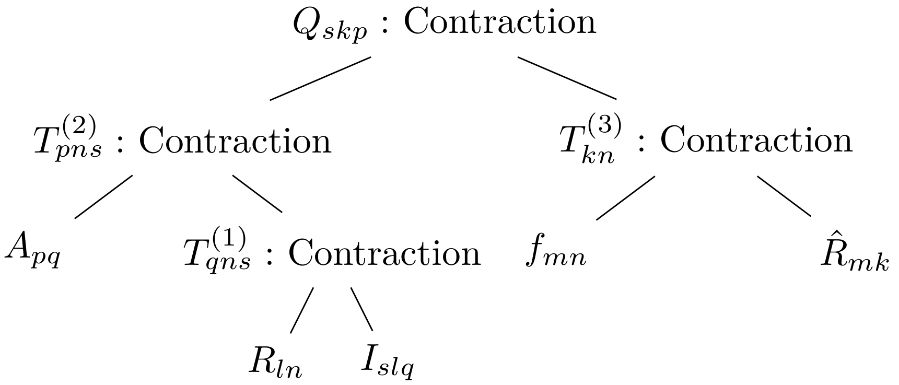
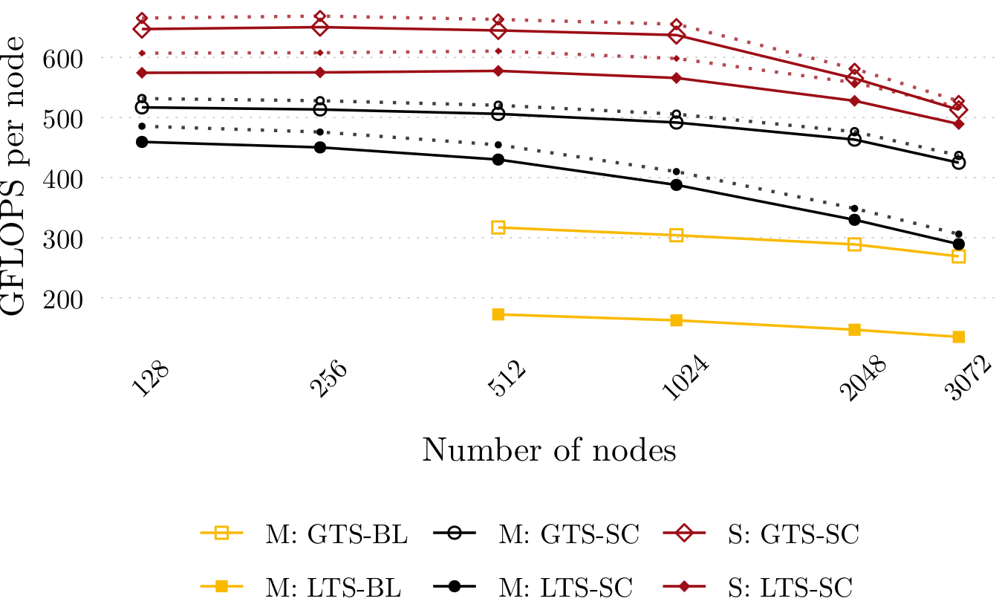
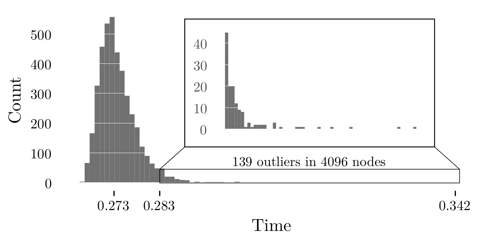
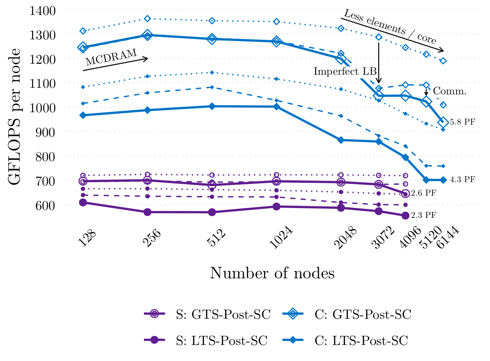

Carsten Uphoff
Flexible Model Extension and Optimisation for
Earthquake Simulations at Extreme Scales
Earthquake Simulations
Ω
Partial differential equations:
$$
\frac{\partial}{\partial t} \sigma_{ij} =
\lambda\delta_{ij}\frac{\partial}{\partial x_k}u_{k}
+ \mu\left(\frac{\partial}{\partial x_j}u_{i} + \frac{\partial}{\partial x_i}u_{j}\right)
$$
$$
\rho \frac{\partial}{\partial t} u_i = \frac{\partial}{\partial x_j}\sigma_{ji}
$$
\(\rho,\mu,\lambda\): density, Lamé parameters
\(\sigma_{ij}, u_i\): stress tensor, particle velocities
Sum over every index that appears twice (Einstein).
Σ
Differential-algebraic equations:
$$
\tau_S s - \tau|s| = 0
$$
$$
\tau_S = \max(0,-\sigma_n f(|s|,\psi))
$$
$$
\frac{d\psi}{dt} = g(|s|,\psi)
$$
\(s=u^+-u^-, \tau=\) traction
\(f,g\): friction law, state evolution eq.
- Local time-stepping
- High-order in time
- High computation, low communication
- Fault as boundary condition (discont. solution space)
- Complex geometries
(tetrahedral meshes) - High-order in space
- Stability analysis
- Flux matrix decomposition

- Dynamic rupture
- Improved load-balancing
- YATeTo
- Viscoelasticity (and plasticity)
- easi model initialisation
SuperMUC-NG, Photo: Veronika Hohenegger, LRZ
- Largest dynamic rupture simulation of the 2004 Sumatra-Andaman earthquake
Yet
Another
Tensor
Toolbox
Why? Fix the implementation chaos:
- Architectures: Haswell, Knights Landing, Skylake, ARM, PowerPC, GPU
- Ensemble simulations
- Polynomial degrees: 1—7
- Rheological model: elastic, viscoelastic, viscoplastic, poroelastic
- Element types: Tetrahedra, Hexahedra (spectral elements)
- P-Adaptivity
- Coupled PDEs
Strong / weak form
UFL: FEniCS, Firedrake, dune-pdelab
vmovapd 0(%rdi), %zmm0
vmovapd 128(%rdi), %zmm1
vfmadd231pd 0(%rsi) {1to8}, %zmm0, %zmm16
vfmadd231pd 0(%rsi,%r15,1) {1to8}, %zmm0, %zmm17
vfmadd231pd 0(%rsi,%r15,2) {1to8}, %zmm0, %zmm18
vfmadd231pd 0(%rsi,%rax,1) {1to8}, %zmm0, %zmm19
vfmadd231pd 0(%rsi,%r15,4) {1to8}, %zmm0, %zmm20
Implementation
BLAS: LIBXSMM, BLIS, OpenBLAS, etc.
Loop-based: loo.py, GEM
LoG: Loop-over-GEMM
Einstein's convention
Ambiguous?
Semantics!
Equivalent sparsity patterns
Zero-blocks induced in 3D tensor due to both n-mode products. Benefits:
- Automatic exploitation of zero blocks
- No (sub-)slice notation required
Optimal index permutations
Dynamic programming is used to find the "optimal" permutations.
Code generation
generator.add('kernel',
Q['skp'] <= Q['skp'] + Rhat['mk'] * F['nm'] * R['ln'] * I['slq'] * A['qp']
)
\( \mathit{tmp0}_{sn[q]} := \mathcal{I}_{sl[q]} R_{ln} \)
for (int _q = 0; _q < 9; ++_q) {
double const* _A = I + 448*_q;
double const* _B = R;
double * _C = _tmp0 + 168*_q;
pspammsparse_3819..._m8_n21_k56_ldA8_ldB0_ldC8_alpha1_beta0_alignedA1_alignedC1_pfsigonly(
_A, _B, _C, 1.0, 0.0, nullptr);
}
\( \mathit{tmp1}_{nk} := F_{nm} \hat{R}_{mk} \)
\( \mathit{tmp2}_{sk[q]} := \mathit{tmp0}_{sn[q]} \mathit{tmp1}_{nk} \)
\( Q_{(sk)p} := Q_{(sk)p} + \mathit{tmp2}_{(sk)q} A_{qp} \)
libxsmm_m448_n15_k9_ldA448_ldB9_ldC448_alpha1_beta1_alignedA1_alignedC1_BL2viaC(
_tmp2, A, Q, nullptr, nullptr, nullptr);
Viscoelasticity
On dual socket Xeon Platinum 8174
(≈ 3.8 TFLOPS, double precision)
- DSL implementation resembles numerical scheme
- High control over implementation
(pre-fetching, memory layout) - High performance
(over 40 % peak)
- Weak form → numerical scheme
- Indices ⇒ less generic
(e.g. 2D vs 3D)
The 2004
Sumatra-Andaman
Earthquake and
Indian Ocean tsunami
- Failure of 1020–1500 km of the Sunda megathrust
- 8–10 minutes of shaking
- 230,000 killed
- Run-up heights of up to 50 m
- MW 9.1–9.3
111 billion degrees of freedom
7 days and 19 hours on full SuperMUC Phase 2
Single node optimisation (2x):
- Wave propagation: Flux matrix decomposition
- Dynamic rupture: Major rewrite using code generation
Clustered local time-stepping for dynamic rupture (6.8x)
In total: Speed-up of 13.6x, production run took 13.9 h including I/O
Strong scaling
Local time-stepping:
SuperMUC,
Shaheen II,
and Cori
Global time-stepping:
SuperMUC (baseline version)
2.3 PFLOPS on Shaheen II and 4.3 PFLOPS on Cori
Strong scaling on SuperMUC and Shaheen
Load balancing on Shaheen?
Improved load balancing on Shaheen and Cori
Parallel efficiency: 91% on Shaheen II, 72% on Cori
Summary
- DSL for small tensors
- Ensemble simulations and viscoelasticity
- Local-time stepping enables simulation of Sumatra earthquake
- Excellent scalability